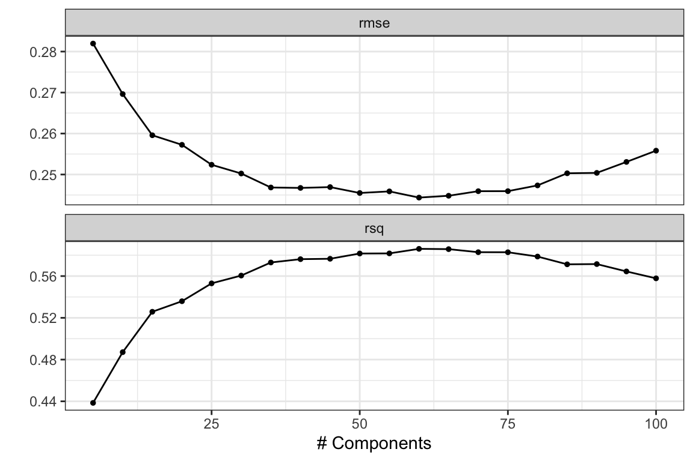
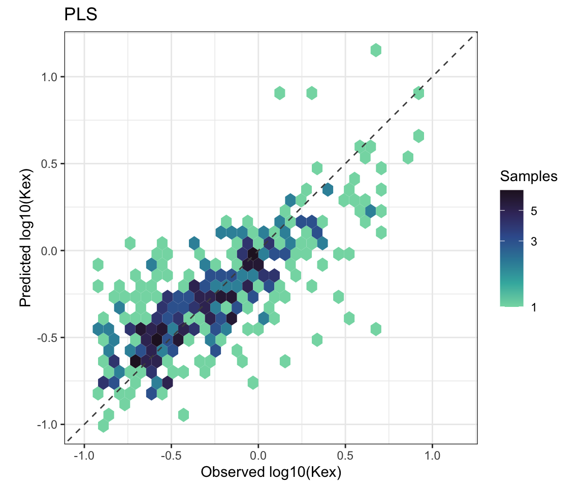
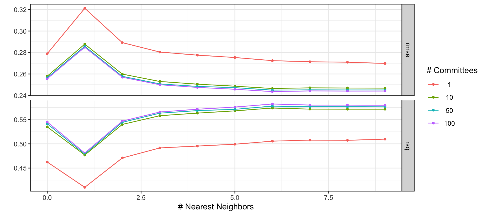
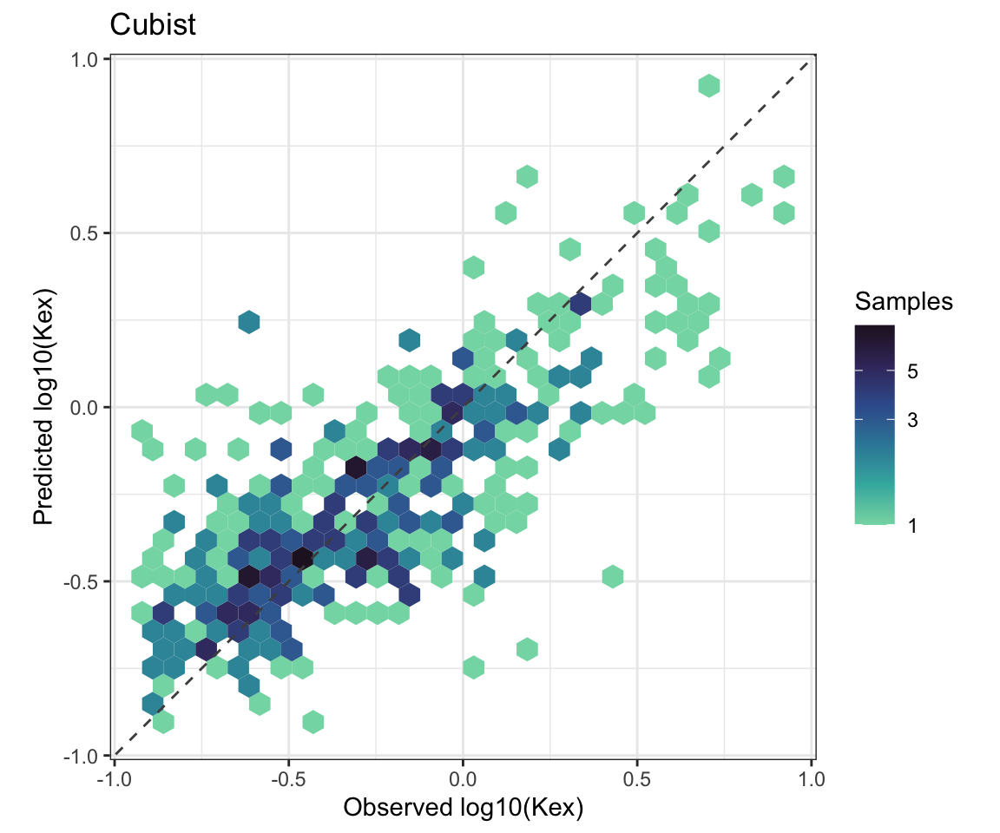
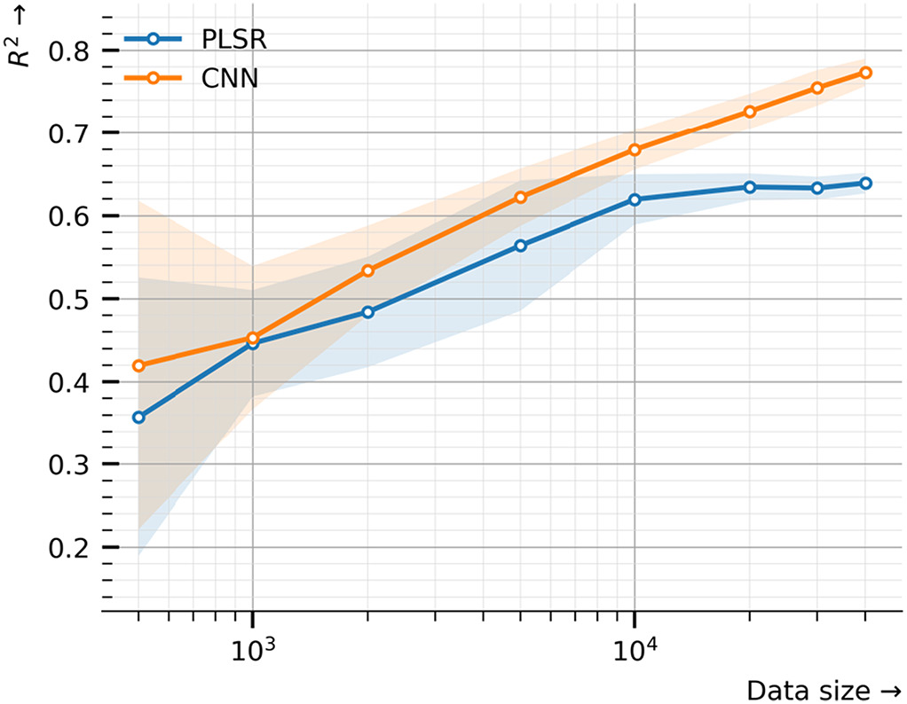

library(here)
library(tidyverse)
library(tidymodels)
library(plsmod)
library(rules)
library(hexbin)
source(here("R", "steps.R"))
theme_set(theme_bw())
tidymodels_prefer()Predicting Exchangeable Potassium using OSSL
The same pipeline, run end to end on a public, global dataset.
This page runs the pipeline from the earlier pages on the OSSL working sample built in Preparing OSSL: 4,548 soils with exchangeable potassium (Kex) and a MIR spectrum. It fits two models and compares them on the same test set. The first is PLS regression, as on the earlier pages. The second is Cubist, a rule-based model. The OSSL team found Cubist to be the best of the algorithms they tested (Safanelli et al., 2025).
SRC_FILE = here("data/ossl_mir_k_sample.rds")TARGET <- "kex"
# --- Preprocessing ----------------------------------------------------------
SG_W <- 15L
SG_P <- 3L
SG_M <- 1L Getting data
data <- read_rds(SRC_FILE)Let’s check the range of wavenumbers:
data |>
select(starts_with("wn")) |>
names() |>
parse_number() |>
range()[1] 600 4000Splitting the data
With 4,548 samples, one validation set replaces cross-validation. initial_validation_split() splits the data three ways: 70% for training, 20% for validation and the remaining 10% for testing. That gives 3,183, 910 and 455 samples. Each candidate model is fitted on the training set and scored on the validation set. The test set is used once, at the end, as in Evaluating performance.
A validation set of 910 samples gives a stable score on its own. Cross-validation would fit every candidate 5 or 10 times. That costs much more time for little gain at this size.
With one validation set there is only one score per candidate. std_err is therefore NA, and select_by_one_std_err() cannot be used.
set.seed(123)
split <- initial_validation_split(data, prop = c(0.7, 0.2))
split<Training/Validation/Testing/Total>
<3183/910/455/4548>Pre-processing recipe
The recipe is the one from Feature engineering, without step_resample(). OSSL spectra are already on one common grid, every 2 cm⁻¹ from 600 to 4000 cm⁻¹, as the range check above shows.
spc_cols <- names(data)[startsWith(names(data), "wn_")]
meta_cols <- setdiff(names(data), c(TARGET, spc_cols))
rec <- recipe(data) |>
update_role(all_of(TARGET), new_role = "outcome") |>
update_role(all_of(spc_cols), new_role = "predictor") |>
update_role(all_of(meta_cols), new_role = "metadata") |>
step_log(all_outcomes(), base = 10) |>
step_snv() |>
step_sg(w = SG_W, p = SG_P, m = SG_M)Plotting predictions
Both models end with the same plot of observed against predicted values, so a small function draws it. With 455 test samples, single points overlap. geom_hex() counts the samples in each hexagon instead, and the fill colour shows the count on a log scale. Both axes are in log10 units, because step_log() transformed the outcome.
plot_obs_pred <- function(res, title = NULL) {
collect_predictions(res) |>
ggplot(aes(x = .data[[TARGET]], y = .pred)) +
geom_hex(bins = 30) +
geom_abline(lty = 2, colour = "grey30") +
scale_fill_viridis_c(option = "mako", direction = -1, begin = 0.1, end = 0.85, transform = "log10") +
labs(
x = "Observed log10(Kex)", y = "Predicted log10(Kex)",
fill = "Samples", title = title) +
coord_obs_pred()
}PLS
Tuning the number of components
The PLS part follows Evaluating performance. With 3,183 training samples, many more components can be useful than with the 49 RT samples. The grid runs from 5 to 100 components, in steps of 5.
pls_spec <- pls(num_comp = tune()) |>
set_engine("mixOmics") |>
set_mode("regression")pls_wf <- workflow() |>
add_recipe(rec) |>
add_model(pls_spec)num_comp_grid <- tibble(num_comp = seq(5, 100, 5))validation_set(split) turns the validation part of the split into a resample that tune_grid() can use.
pls_res <- tune_grid(
pls_wf,
resamples = validation_set(split),
grid = num_comp_grid
)autoplot(pls_res)
pls_best <- select_best(pls_res, metric = "rmse")
pls_best# A tibble: 1 × 2
num_comp .config
<dbl> <chr>
1 60 pre0_mod12_post0Final fit
last_fit() fits the finalised workflow on the training set and scores it on the test set. With a three-way split, it leaves the validation set out of the fit by default. add_validation_set = TRUE would add it.
pls_final_wf <- pls_wf |> finalize_workflow(pls_best)pls_final <- pls_final_wf |> last_fit(split)collect_metrics(pls_final)# A tibble: 2 × 4
.metric .estimator .estimate .config
<chr> <chr> <dbl> <chr>
1 rmse standard 0.251 pre0_mod0_post0
2 rsq standard 0.587 pre0_mod0_post0collect_predictions(pls_final)# A tibble: 455 × 5
.pred id kex .row .config
<dbl> <chr> <dbl> <int> <chr>
1 -0.0984 train/test split -0.609 10 pre0_mod0_post0
2 -0.0846 train/test split -0.0190 19 pre0_mod0_post0
3 -0.394 train/test split -0.250 28 pre0_mod0_post0
4 -0.213 train/test split -0.0467 47 pre0_mod0_post0
5 -0.626 train/test split -0.536 55 pre0_mod0_post0
6 0.159 train/test split 0.326 63 pre0_mod0_post0
7 -0.00996 train/test split 0.265 66 pre0_mod0_post0
8 -0.693 train/test split -0.754 71 pre0_mod0_post0
9 -0.481 train/test split -0.434 83 pre0_mod0_post0
10 -0.709 train/test split -0.676 84 pre0_mod0_post0
# ℹ 445 more rowsplot_obs_pred(pls_final, "PLS")
Cubist
How Cubist works
Cubist builds a set of rules. Each rule is a condition on the predictors, for example “PC01 > 0.3 and PC04 ≤ -0.1”, and it holds its own linear regression. A sample is predicted by the linear models of the rules it meets. PLS fits one linear model to all samples. Cubist can fit different linear models to different kinds of soil.
Two settings change how the final prediction is made:
committeesbuilds a sequence of Cubist models. Each new model is fitted to an outcome adjusted for the errors of the model before it, in a way similar to boosting. The prediction is the average over all committee members.committees = 1is a single model.neighborsadjusts each prediction using the most similar training samples. Cubist finds theneighborsnearest training samples and corrects the model prediction by how far the model was wrong on them.neighbors = 0turns this off. The maximum is 9.
Using PCA scores as predictors
Cubist searches for rule conditions one predictor at a time. With about 1,700 highly correlated wavenumbers, that search is slow, and the rules pick individual wavenumbers that happen to fit the noise. step_pca() first compresses the spectra into a few principal components. threshold = 0.99 keeps as many components as it takes to explain 99% of the variance of the preprocessed spectra. tune_grid() fits the PCA inside the workflow, on the training set only.
rec_pca <- rec |>
step_pca(all_predictors(), threshold = 0.99)The number of components this keeps on the training set:
rec_pca |>
prep(training = training(split)) |>
bake(new_data = NULL) |>
select(starts_with("PC")) |>
ncol()[1] 36Tuning committees and neighbors
cubist_rules() comes from the rules package, which adds rule-based models to parsnip. The grid crosses 4 values of committees with every value of neighbors. That is 40 candidates, but neighbors does not change the fitted model, only the prediction. tune_grid() therefore fits only 4 models and scores the 10 neighbors values from each one. max_rules stays at its default: no limit.
cub_spec <- cubist_rules(committees = tune(), neighbors = tune()) |>
set_engine("Cubist")cub_wf <- workflow() |>
add_recipe(rec_pca) |>
add_model(cub_spec)cub_grid <- crossing(
committees = c(1, 10, 50, 100),
neighbors = 0:9
)cub_res <- tune_grid(
cub_wf,
resamples = validation_set(split),
grid = cub_grid
)autoplot(cub_res)
show_best(cub_res, metric = "rmse", n = 5)# A tibble: 5 × 8
committees neighbors .metric .estimator mean n std_err .config
<dbl> <int> <chr> <chr> <dbl> <int> <dbl> <chr>
1 100 6 rmse standard 0.244 1 NA pre0_mod37_post0
2 100 8 rmse standard 0.244 1 NA pre0_mod39_post0
3 100 9 rmse standard 0.244 1 NA pre0_mod40_post0
4 100 7 rmse standard 0.244 1 NA pre0_mod38_post0
5 50 6 rmse standard 0.245 1 NA pre0_mod27_post0cub_best <- select_best(cub_res, metric = "rmse")
cub_best# A tibble: 1 × 3
committees neighbors .config
<dbl> <int> <chr>
1 100 6 pre0_mod37_post0Final fit
cub_final <- cub_wf |>
finalize_workflow(cub_best) |>
last_fit(split)collect_metrics(cub_final)# A tibble: 2 × 4
.metric .estimator .estimate .config
<chr> <chr> <dbl> <chr>
1 rmse standard 0.251 pre0_mod0_post0
2 rsq standard 0.585 pre0_mod0_post0plot_obs_pred(cub_final, "Cubist")
Comparing the two models
Both models were tuned on the same validation set and tested on the same 455 test samples. Their test scores compare directly.
bind_rows(
PLS = collect_metrics(pls_final),
Cubist = collect_metrics(cub_final),
.id = "model"
) |>
select(model, .metric, .estimate) |>
pivot_wider(names_from = .metric, values_from = .estimate)# A tibble: 2 × 3
model rmse rsq
<chr> <dbl> <dbl>
1 PLS 0.251 0.587
2 Cubist 0.251 0.585On this sample, the two models score about the same. The difference is too small to mean anything. Another random split would change both scores by more than that.
How much data does a model need?
Figure 1 shows why. It comes from Albinet et al. (2022), who predicted Kex from KSSL MIR spectra with PLS and with a convolutional neural network (CNN). Both models were trained on growing subsets of the data. Each point is the mean R² over 20 different test splits, and the shaded band is ±1 standard deviation.

Three things stand out:
- At about 4,500 samples, the size of this working sample, the CNN gains only about 0.05 in R² over PLS. The two bands overlap.
- At that size, R² varies by about ±0.05 from one test split to another. A single split, as on this page, cannot separate two models that differ by less than that.
- PLS levels off at about 0.64 from 10,000 samples. The CNN keeps improving, to about 0.77. The spectra hold more information about Kex than a linear model can use, but a flexible model needs a lot of data to find it.
Cubist is also a flexible model: each rule fits its own linear model to a different group of soils. Whether it follows the CNN curve or the PLS curve as the data grows is an open question, and one you can test.
Trying with more data
The working sample keeps 10% of the OSSL samples that have both a Kex value and a MIR spectrum. To use more:
- In Preparing OSSL, raise
propinslice_sample(), or remove that line to keep all of them, about 45,000 samples. - Run that page again to save the larger sample. It overwrites
data/ossl_mir_k_sample.rds. - Run this page again. Fitting takes longer as the data grows, especially for Cubist with many committees.
To compare models fairly, repeat the comparison over several random splits, or use cross-validation as in Evaluating performance. Then compare the spread of the scores, not only their means. That is how Figure 1 was built.